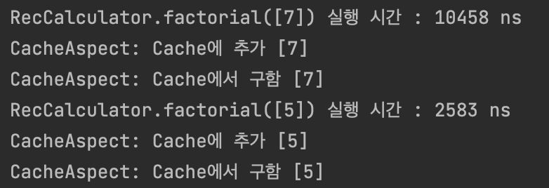

<meta charset="utf-8">
<html lang="ko">
<head>
    <link rel="stylesheet" type="text/css" href="./../style.css" />
    <title>Ch07. Advice 적용 순서, @Order, @Around의 Pointcut 설정</title>
</head>
<body id="tt-body-page" class="">
<div id="wrap" class="wrap-right">
    <div id="container">
        <main class="main ">
            <div class="area-main">
                <div class="area-view">
                    <div class="article-header">
                        <div class="inner-article-header">
                            <div class="box-meta">
                                <h2 class="title-article">Ch07. Advice 적용 순서, @Order, @Around의 Pointcut 설정</h2>
                                <div class="box-info">
                                    <p class="category">Web</p>
                                    <p class="date">2022-06-28 16:34:14</p>
                                </div>
                            </div>
                        </div>
                    </div>
                    <hr>
                    <div class="article-view">
                        <div class="contents_style">
                            <p data-ke-size="size16">한 Pointcut에 여러개의 Advice를 적용 할 수 있다.</p>
<p data-ke-size="size16">즉 한 Pointcut에 여러개의 공통 기능들이 적용되도록 할 수 있다.&nbsp;</p>
<p data-ke-size="size16">&nbsp;</p>
<p data-ke-size="size16"><b>Calculator 인터페이스와 이를 상속받는 RecCalculator 클래스.</b></p>
<pre class="routeros"><code>package chap07;

public interface Calculator
{
    public long factorial(long num);
}
</code></pre>
<pre class="java"><code>package chap07;

public class RecCalculator implements Calculator
{
    @Override
    public long factorial(long num)
    {
        if(num == 0) return 1;
        else return num * factorial(num-1);
    }
}
</code></pre>
<p data-ke-size="size16">&nbsp;</p>
<p data-ke-size="size16"><b>CacheAspect 클래스</b></p>
<pre class="kotlin"><code>@Aspect
public class CacheAspect
{
    private Map&lt;Long, Object&gt; cache = new HashMap&lt;&gt;();

    @Pointcut("execution(public * chap07..*(long))")
    public void cacheTarget() {}

    // num없으면 추가, 있으면 리턴
    @Around("cacheTarget()")
    public Object execute(ProceedingJoinPoint joinPoint) throws Throwable
    {
        Long num = (Long)joinPoint.getArgs()[0];
        if(cache.containsKey(num))
        {
            System.out.printf("CacheAspect: Cache에서 구함 [%d]\n", num);
            return cache.get(num);
        }

        Object result = joinPoint.proceed(); // 핵심 기능 실행
        cache.put(num, result);
        System.out.printf("CacheAspect: Cache에 추가 [%d]\n", num);
        return result;
    }
}
</code></pre>
<p data-ke-size="size16">CacheAspect 클래스는 캐시를 구현한&nbsp;<b>공통 기능이다.&nbsp;</b></p>
<p data-ke-size="size16">Pointcut은 chap07 패키지의 첫번째 인자가 long인 메서드이므로 Calculator.factorial(long)이 해당된다.</p>
<p data-ke-size="size16">&nbsp;</p>
<p data-ke-size="size16">&nbsp;</p>
<p data-ke-size="size16"><b>AppCtxWithCache 클래스</b></p>
<pre class="java"><code>@Configuration
@EnableAspectJAutoProxy
public class AppCtxWithCache
{
    // CacheAspect 먼저
    @Bean
    public CacheAspect cacheAspect() {return new CacheAspect();}
    // ExeAspect 그 다음
    @Bean
    public ExeTimeAspect exeTimeAspect()
    {
        return new ExeTimeAspect();
    }

    // ExeTimeAspect 의 measure 메소드가 적용됨
    @Bean
    public Calculator calculator()
    {
        return new RecCalculator();
    }
}</code></pre>
<p data-ke-size="size16">설정 클래스다.&nbsp;</p>
<p data-ke-size="size16">CacheAspect와 ExeTimeAspect 이 있는데 두 Aspect에서 설정한 Pointcut은 모두 Calculator 타입의 factorial() 메소드에 적용된다.<b> 즉 한 Pointcut에 여러 Advice가 적용되는 것이다.&nbsp;</b></p>
<p data-ke-size="size16">&nbsp;</p>
<p data-ke-size="size16">설정 클래스를 보면<b> CacheAspect 빈 객체를 먼저, 그 다음에 ExeTimeAspect 객체를 정의한다.</b></p>
<p data-ke-size="size16"><b>이 순서가 실행 순서에 영향을 준다.</b></p>
<p data-ke-size="size16">&nbsp;</p>
<p data-ke-size="size16">마지막으로 <b>메인</b>이다.</p>
<pre class="java"><code>public class MainAspectWithCache
{
    public static void main(String[] args)
    {
        AnnotationConfigApplicationContext ctx =
                new AnnotationConfigApplicationContext(AppCtxWithCache.class);

        Calculator cal = ctx.getBean("calculator", Calculator.class); // CacheAspect 프록시 객체
        cal.factorial(7);
        cal.factorial(7);
        cal.factorial(5);
        cal.factorial(5);
        ctx.close();
    }
}</code></pre>
<p data-ke-size="size16"><b>실행결과:&nbsp;</b></p>
<p><figure class="imageblock alignLeft" width="458" height="157" >
    <span data-lightbox="lightbox">
        
    </span>
    <figcaption></figcaption>
</figure></p>
<p data-ke-size="size16">&nbsp;</p>
<p data-ke-size="size16">실행결과를 보면 처음에 cal.factorial(7)이 실행됐을때는, 실행 시간을 출력하고 (1줄) 캐시에 추가했다는 메세지가 출력된다 (2줄).</p>
<p data-ke-size="size16">그런데 두 번째 cal.factorial(7)이 실행됐을때는 실행 시간을 출력하는 메시지가 없다.&nbsp;</p>
<p data-ke-size="size16">&nbsp;</p>
<p data-ke-size="size16"><b>이는 Advice가 여러개 일때, 스프링이 Advice를 적용하는 순서가 있기 때문이다.</b></p>
<p data-ke-size="size16">AppCtxWithCache 클래스에서 CacheAspect 빈 객체가 정의 되고 그 아래에 ExeTimeAspect 빈 객체가 정의됐었다.</p>
<p data-ke-size="size16">이 상황에서 스프링은 Advice를 다음과 같은 순서로 적용한다.</p>
<p data-ke-size="size16">&nbsp;</p>
<h4 style="text-align: center;" data-ke-size="size20"><b>CacheAspect 프록시 -&gt; ExeTimeAspect 프록시 -&gt; 실제 대상 객체 (여기서는 RecCalculator)&nbsp;</b></h4>
<p style="text-align: left;" data-ke-size="size16">&nbsp;</p>
<p style="text-align: left;" data-ke-size="size16">즉 메인함수의 getBean("calculator", Calculator.class)로 받은 객체는 <b>실제로는 CacheAspect 프록시 객체이다.</b></p>
<p style="text-align: left;" data-ke-size="size16">그리고<b> CacheAspect의 대상 객체가 ExeTimeAspect 프록시 객체</b>이고, <b>ExeTimeAspect 객체의 대상 객체가 RecCalculator</b>인 것이다.</p>
<p style="text-align: left;" data-ke-size="size16">&nbsp;</p>
<hr contenteditable="false" data-ke-type="horizontalRule" data-ke-style="style3" />
<h3 style="text-align: left;" data-ke-size="size23"><b>실행순서&nbsp;</b></h3>
<p data-ke-size="size16">실행순서를 살펴보자.&nbsp;</p>
<p data-ke-size="size16">다음은 메인함수에서 빈 객체를 받아서 factorial 연산을 실행하는 부분이다.&nbsp;</p>
<pre class="maxima"><code>Calculator cal = ctx.getBean("calculator", Calculator.class); // CacheAspect 프록시 객체
cal.factorial(7);
cal.factorial(7);
cal.factorial(5);
cal.factorial(5);
ctx.close();</code></pre>
<p data-ke-size="size16">&nbsp;</p>
<p data-ke-size="size16"><b>1.</b></p>
<p data-ke-size="size16">먼저 ctx.getBean() 메소드로 빈 객체를 받아올 것이다.&nbsp;</p>
<p data-ke-size="size16">여기서 빈 객체는 앞서 말했듯이 CacheAspect 프록시 객체이다.&nbsp;</p>
<p data-ke-size="size16">왜? getBean() 메소드에 의해 설정 클래스인 AppCtxWithCache 클래스로 가보면&nbsp;</p>
<pre class="java"><code>@Configuration
@EnableAspectJAutoProxy
public class AppCtxWithCache
{
    // CacheAspect 먼저
    @Bean
    public CacheAspect cacheAspect() {return new CacheAspect();}
    // ExeAspect 그 다음
    @Bean
    public ExeTimeAspect exeTimeAspect()
    {
        return new ExeTimeAspect();
    }</code></pre>
<p data-ke-size="size16">CacheAspect 빈 객체가 먼저 정의되있고 ExeTimeAspect 빈 객체가 뒤에 있다.</p>
<p data-ke-size="size16">따라서 스프링은 Advice를 다음 순서로 적용한다.</p>
<h4 style="text-align: center;" data-ke-size="size20"><b>CacheAspect 프록시 -&gt; ExeTimeAspect 프록시 -&gt; 실제 대상 객체 (여기서는 RecCalculator)&nbsp;</b></h4>
<p data-ke-size="size16">그렇기 때문에 메인함수에서 getBean() 메소드로 받아온 객체는 CacheAspect 프록시 객체이다.</p>
<p data-ke-size="size16">&nbsp;</p>
<p data-ke-size="size16"><b>2.</b></p>
<p data-ke-size="size16"><b>첫 번째 cal.factorial(7) </b></p>
<p data-ke-size="size16">cal은 CacheAspect 프록시 객체이고 factorial(7)은 CacheAspect의 Pointcut과 일치하기 때문에 CacheAspect의 @Around 애노테이션이 붙은 execute() 메소드가 실행된다.&nbsp;</p>
<p data-ke-size="size16">&nbsp;</p>
<p data-ke-size="size16">execute() 메소드에서 7을 키로 갖는 값이 없기 때문에 joinPoint.proceed()를 실행해서 <b>대상</b>을 실행한다.</p>
<p data-ke-size="size16"><b>여기서 대상은 ExeTimeAspect 프록시 객체이다.</b></p>
<p data-ke-size="size16">CacheAspect의 Pointcut은 chap07 패키지의 첫 번째 파라미터가 long형인 public 메소드이다.</p>
<p data-ke-size="size16">따라서 ExeTimeAspect 의 measure() 메소드가 실행된다.</p>
<p data-ke-size="size16">&nbsp;</p>
<p data-ke-size="size16"><b>ExeTimeAspect의 measure() 메소드</b>의 try 블록에서 joinPoint.proceed()를 실행해서 대상을 실행한다.</p>
<p data-ke-size="size16">여기서 대상은 RecCalculator 객체다.&nbsp;</p>
<p data-ke-size="size16">ExeTimeAspect의 Pointcut은 chap07 패키지의 모든 public 메소드이고, RecCalculator.factorial()은 이에 해당되기 때문에 실행된다.&nbsp;</p>
<p data-ke-size="size16">그 후 <b>measure() 메소드에서 실행 시간을 출력한다.&nbsp;</b></p>
<p data-ke-size="size16">&nbsp;</p>
<p data-ke-size="size16">이제 다시 CacheAspect의 execute() 함수의 proceed() 이후로 돌아온다.&nbsp;</p>
<p data-ke-size="size16">따라서 <b>캐시에 추가했음을 출력한다.</b></p>
<p data-ke-size="size16">&nbsp;</p>
<p data-ke-size="size16">여기까지가 첫 번째 cal.factorial(7)이 실행 됐을때이다.</p>
<p data-ke-size="size16">&nbsp;</p>
<p data-ke-size="size16"><b>3.&nbsp;</b></p>
<p data-ke-size="size16"><b>두 번째 cal.factorial(7)</b></p>
<p data-ke-size="size16">첫번째와 마찬가지로 우선 CacheAspect의 execute() 메소드가 실행된다.&nbsp;</p>
<p data-ke-size="size16">그런데 이번에는 7을 키로 갖는 값이 있기 때문에 <b>캐시를 구했음을 출력</b>하고 해당 값을 리턴해버린다.</p>
<p data-ke-size="size16">따라서 joinPoint.proceed()가 실행되지 않기 때문에 ExeTimeAspect와 실제 객체가 실행될 기회가 없다.&nbsp;</p>
<p data-ke-size="size16">&nbsp;</p>
<p data-ke-size="size16">그렇기 때문에 첫 번째 cal.factorial(7)을 실행했을때는 실행시간과 캐시 추가했음이 출력되지만, <b>두 번째 에서는 실행시간이 출력되지 않은 것이다. (ExeTimeAspect가 실행되지 않았기 때문에)&nbsp;</b></p>
<p data-ke-size="size16">&nbsp;</p>
<hr contenteditable="false" data-ke-type="horizontalRule" data-ke-style="style3" />
<h2 data-ke-size="size26"><b>Advice 적용 순서 지정 (@Order)&nbsp;</b></h2>
<p data-ke-size="size16">위에서는 설정 클래스에서 정의한 순서대로 Advice가 적용됐지만, <b>어떤것이 먼저 적용될지는 스프링 버전이나 자바 버전에 따라 달라질수 있다</b>고 한다.&nbsp;</p>
<p data-ke-size="size16">따라서 순서가 유의미 할때는 <b>@Order 애노테이션으로</b> 직접 순서를 지정해 줘야 한다.&nbsp;</p>
<p data-ke-size="size16"><b>@Aspect 과 함께 @Order(값)을 붙이면 지정한 값에 따라 적용 순서가 결정된다.</b></p>
<p data-ke-size="size16">&nbsp;</p>
<pre class="less"><code>@Aspect
@Order(1) // 첫번째로 적용
public class CacheAspect</code></pre>
<pre class="less"><code>@Aspect
@Order(2) // 두번째로 적용
public class ExeTimeAspect</code></pre>
<p data-ke-size="size16">&nbsp;</p>
<p data-ke-size="size16">&nbsp;</p>
<hr contenteditable="false" data-ke-type="horizontalRule" data-ke-style="style3" />
<h2 data-ke-size="size26"><b>@Around에 Pointcut 설정</b></h2>
<p data-ke-size="size16">지금까지 @Pointcut을 붙인 메소드를 따로 만들었는데, <b>@Around에 execution 명시자를 직접 지정할수도 있다.</b></p>
<pre class="css"><code>@Around("execution(public * chap07..*(..))")</code></pre>
<p data-ke-size="size16">&nbsp;</p>
<p data-ke-size="size16">또한 같은 Pointcut을 여러 Advice가 사용한다면 재사용 할 수도 있다.&nbsp;</p>
<pre class="java" data-ke-language="java"><code>@Pointcut("execution(public * chap07..*(..))")
public void publicTarget() {}</code></pre>
<p data-ke-size="size16">위와 같이 Pointcut이 메소드에 정의 됐다. 이 메소드는 public 이기 때문에 다른 클래스에서도 이 Pointcut을 사용할수 있다.&nbsp;</p>
<p data-ke-size="size16">하지만 <b>다른 클래스에서 사용할때는 완전한 클래스 이름을 포함한 메서드 이름으로 사용해야 한다.</b><b></b></p>
<pre class="css"><code>@Around("aspect.ExeTimeAspect.publicTarget()")</code></pre>
<p data-ke-size="size16">&nbsp;</p>
<p data-ke-size="size16">&nbsp;</p>
<hr contenteditable="false" data-ke-type="horizontalRule" data-ke-style="style3" />
<p data-ke-size="size16">여기까지가 챕터7 AOP다.&nbsp;</p>
<p data-ke-size="size16">스프링의 AOP 기능들이 어떤 식으로 돌아가는지 자체도 쉽지 않지만, 이걸 실제로 활용해서 프로그램 구조를 만드는 건 정말 쉽지 않을것 같고 익숙해지려면 오랜 시간이 걸릴것 같다.&nbsp;</p>
<p data-ke-size="size16">&nbsp;</p>
<p data-ke-size="size16">&nbsp;</p>
<p data-ke-size="size16"><span style="color: #555555;">출처 : 스프링5 프로그래밍 입문 (최범균 저)&nbsp;</span></p>
<p data-ke-size="size16">&nbsp;</p>
                        </div>
                        <br/>
                        <div class="tags">
                            #AOP #Spring 
                        </div>
                    </div>
                </div>
            </div>
        </main>
    </div>
</div>
</body>
</html>
